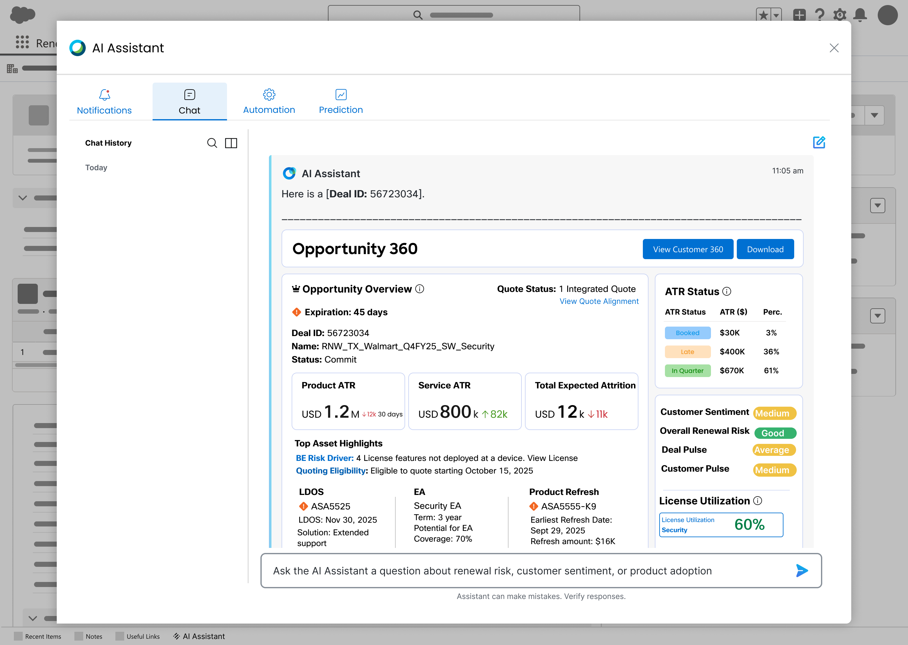
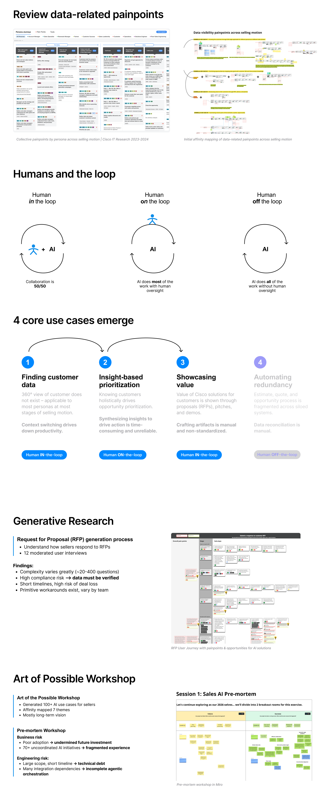

SFDC Renewals AI Support-C360,O360 Cisco | 2025  Problem Users require timely and accurate access to customers' information to perform their tasks effectively. However, the current system fails to provide the necessary data or functionality, resulting in user frustration, inefficiencies, and potential negative impacts on customer service and business operations. This gap between user needs and system capabilities must be addressed to improve information accessibility and overall user satisfaction. Goal Bridge the gap between system capabilities and user needs by translating user insights into an intuitive, AI-powered chat system and data-driven interface that accelerates information accessibility. Role Led end to end project Collaborated with PM, Business, and Dev team Conducted user interview Validated usability Created prototype Key Impact Time Savings: By eliminating the need to search multiple sources for customer information, users save 20% of their valuable time. Improved User Experience: Users receive customer information directly without needing to "hunt" for it. By reducing the workflow by at least 7 steps, the design ensures a seamless, frictionless, and highly efficient user experience. Reduced Cognitive Overload: Consolidating insights into a single view eliminates the need to manage 3+ separate tools, substantially reducing mental fatigue and supporting better decision-making. Enhanced Efficiency: Streamlined access to information supports faster response times and improved customer interactions. Increased Productivity and Focus: Freed from administrative burdens, users can concentrate more on activities that drive revenue growth, such as increasing Annual Recurring Revenue (ARR). Consolidated Access: Users do not have to switch between multiple tools to gather customer data, which simplifies their tasks and reduces complexity. Prototype Review data-related painpoints Humans and the loop 4 core use cases Generative Research Art of Possible Workshop with stakeholders  Learning Ecosystem-Wide AI UX: Collaborating closely with UX researchers proved essential in transforming raw data into actionable, high-impact design strategies. This cross-functional partnership allowed for deeper empathy with users and ensured that product decisions were rooted in validated insights rather than assumptions. User-Centric AI Design: Synthesizing contrasting and diverse opinions from engineering, security, and product teams significantly refined the solution. Welcoming these varied viewpoints helped identify edge cases early on and led to a more balanced, compliant, and inclusive user experience.